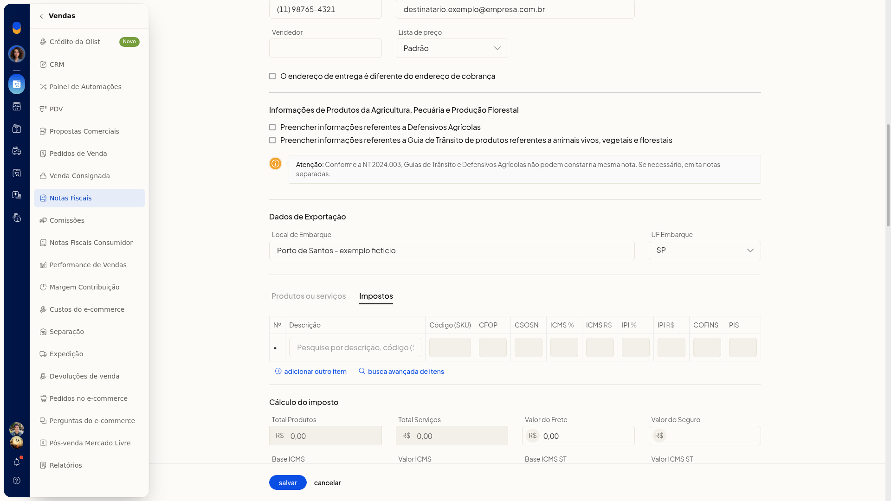

Nota fiscal mista (produto e serviço)
Importante
- O controle Produtos ou serviços abre os impostos do item, não um formulário de serviço.
- O menu mais do item não inclui ação de serviço.
Instruções
-
Acesse Vendas > Notas Fiscais.
-
Clique em incluir nota fiscal.
-
Na área de itens, confira os dados de produto: produto, código, unidade, quantidade e preço unitário.
-
Clique em Produtos ou serviços para abrir os impostos do item.

-
Nos totais da nota, confira Total Serviços e Valor ISSQN. Na mesma área também aparecem IPI Devolvido, Funrural, FCP e IBS/CBS.

Resultado
A nota exibe, na mesma tela, os totais de serviço ao lado dos tributos de produto.
Informações adicionais
- A aba Impostos do item mostra as colunas CFOP, CSOSN, ICMS, IPI, COFINS e PIS.
- Total Serviços e Valor ISSQN podem aparecer preenchidos nos totais, como 150,00 e 15,00.